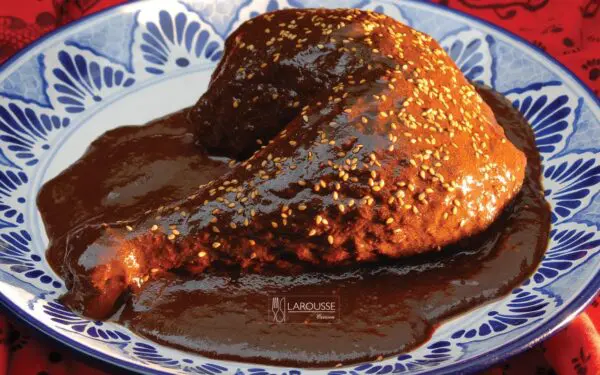

Mole rojo

Delicioso platillo mexicano del estado de Puebla
Ingredients
- Manteca de cerdo
- Chile mulato
- Chile pasilla
- Chile ancho
- Caldo de pollo
- Almendras
- Cacahuates pelados y tostados
- Nuez pecan pelada
- Pepitas de calabaza peladas
- Ajonjolí
- Tomate
- Jitomate
- Plátano macho maduro y frito
- Pasitas
- Clavos asados
- Pimienta gorda
- Comino
- Anis entero
- Canela
- Tomillo seco
- Orégano seco
- Ajo
- Cebolla blanca
- Sal
- Bolillo rebanado y frito en manteca
- Toritllas de maiz
- Tablillas de chocolate
- Azucar morena
- Pollo
- Agua
Steps
- Caliente 1 taza de manteca de cerdo y fría los chiles uno por uno (reserve la manteca restante para freír la salsa). Póngalos en una cazuela con 2 litros de caldo de pollo y hiérvalos hasta que los chiles estén muy suaves y casi deshaciéndose (20 minutos aproximadamente). Retírelos del fuego y deje enfriar.
- Licue la cuarta parte de los chiles con 2 tazas de caldo de pollo hasta obtener una textura muy tersa, de tal manera que al colarlo no quede nada atrapado en el colador. Repita este paso con las otras tres porciones de los chiles restantes, aumentando 2 tazas de caldo de pollo cada vez./
- Caliente, en la olla en la que se hará el mole, la manteca reservada. Deje que humee ligeramente y fría el licuado de los chiles, deberá quedar bien frito e incluso espeso. Espere hasta poder ver el fondo de la olla al mover la salsa con una cuchara (½ hora aproximadamente). Deje sobre el fuego.
- En un sartén a fuego medio, caliente 2 cucharadas de manteca y fría las almendras hasta que se doren ligeramente. Añada los cacahuates y la nuez, y cuando éstos se doren agregue las pepitas de calabaza. Baje el fuego y mueva constantemente. Cuando la pepita se haya inflado integre el ajonjolí y continúe friendo hasta que todos los ingredientes estén dorados. Retire del fuego y deje enfriar. Licue todos los ingredientes con 3 tazas de caldo de pollo hasta obtener una salsa muy tersa que no sea necesario colar. Vierta el licuado en la salsa del mole, mezcle y mueva constantemente.
- Caliente ½ taza de manteca a fuego alto y fría el tomate y el jitomate; una vez fritos, baje el fuego y cueza hasta que estén totalmente desbaratados y hayan tomado una consistencia casi de puré (½ hora aproximadamente). Añada el plátano frito y las pasitas, cueza por 15 minutos más y retire del fuego. Deje enfriar la mezcla para poder licuarla.
- Licue la mitad de la mezcla con 2 tazas de caldo hasta que quede una salsa muy tersa que al pasarla por el colador no queden residuos; reserve. Repita este paso con la otra mitad de la mezcla y 2 tazas de caldo de pollo. Añada este licuado al mole moviendo constantemente.
- Licue los clavos, las pimientas, el comino, el anís, la canela, el tomillo, el orégano, los ajos y la cebolla con 2 tazas de caldo de pollo hasta que obtenga una mezcla muy tersa. Cuele y añada al mole.
- Continúe la cocción a fuego lento durante ½ hora, sin dejar de mover para que no se pegue en el fondo; añada la sal, mezcle y siga cociendo.
- Licue el bolillo y las tortillas con 2 tazas de caldo de pollo hasta que obtenga una mezcla tersa; cuele y añada al mole. Continúe la cocción por 10 minutos más.
- Rompa las tablillas de chocolate y añádalas al mole junto con el azúcar. Mezcle bien y cueza durante 20 minutos más. (En este punto la salsa debe estar espesa. Si estuviera muy aguada no importa, pues todavía va a reducir. En caso de que esté muy espesa, añada un poco de caldo.) Retire el mole del fuego cuando empiecen a flotar en la superficie grandes vetas o manchas de grasa; esto es señal de que la salsa está totalmente cocida.
- El día que servirá el mole, cueza en una olla grande el pollo con agua, los ajos, la cebolla y la sal. Con una espumadera o cuchara retire la espuma que flota en la superficie del caldo mientras se cuece el pollo.
- Si desea, puede añadir el pollo cocido al mole o servir las piezas de pollo bañadas con él. Decore la superficie del mole poblano con una pizca de ajonjolí.